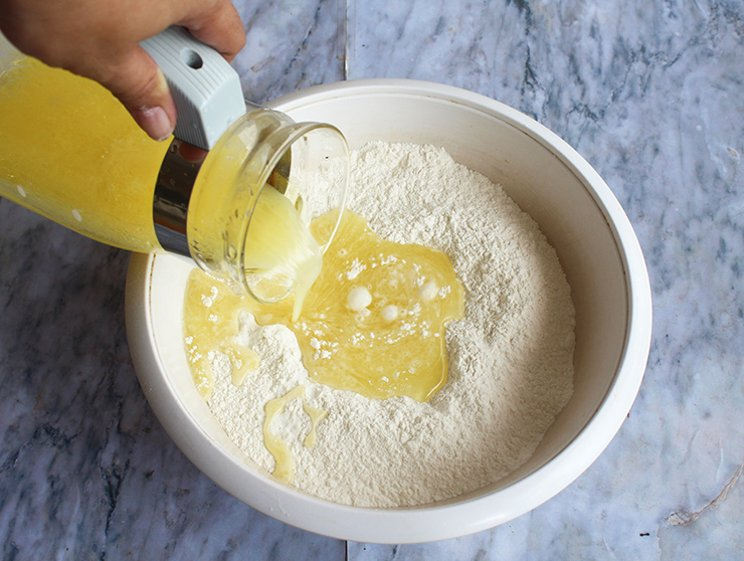
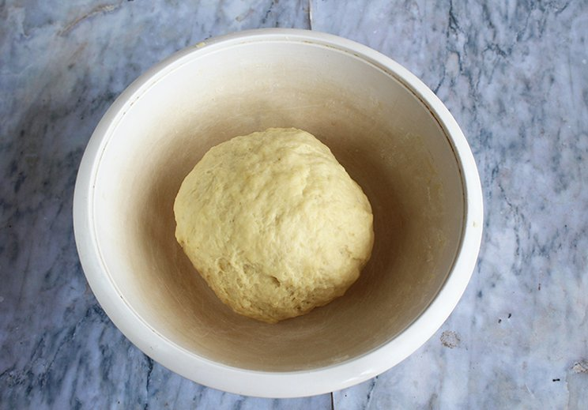
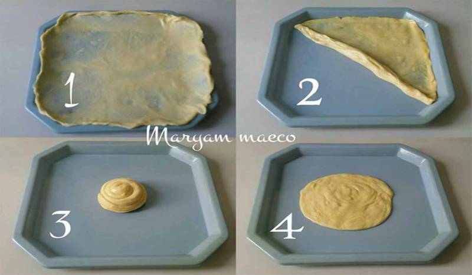

Resep Kue Maryam

Bahan-bahan
- 250 gr tepung terigu
- 1 buah telur
- 3 sdm margarin, lelehkan
- 100 ml air hangat
- 2 sdm susu bubuk (Optional)
- 1 2 sdt garam
- margarin leleh untuk olesan
- minyak untuk merendam
Langkah-langkah
- Campur semua bahan roti jadi satu

- Uleni sampai kalis (Aku pake tangan) jangan takut jika adonan lengket ya, lumuri tangan sesekali dengan tepung

- Kalisnya adonan canai tidak sekalis adonan roti ya, kira2 seperti ini sudah cukup
